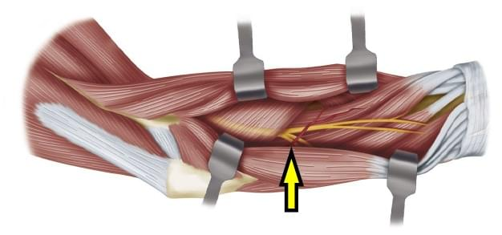

Destino: a estrutura assinalada na imagem da prova. Arraste para começar a rota.

No acesso de THOMPSON, a estrutura assinalada é o nervo
Comente a sua letra antes de seguir a rota
Siga pelo nervo radialaté perto da cabeça do rádio.
Na bifurcação, pegue o ramo profundoO motor. O superficial, sensitivo, segue sob o braquiorradial.
Entre no supinadorpela arcada de Frohse.
Contorne o colo do rádiopor dentro do supinador.
Saia no dorso do antebraçocomo interósseo posterior.
RESPOSTA C
A entrada fica entre o extensor radial curto do carpo e o extensor comum dos dedos. No terço proximal, o rádio está coberto pelo supinador, e dentro dele passa o interósseo posterior: identifique e proteja antes de desinserir o músculo do rádio.
Medianooutra avenidaCorre na face volar, entre o flexor superficial e o profundo. É das vias anteriores.
Sensitivo radiala outra saídaO ramo superficial desce sob o braquiorradial e aparece no terço distal. Não é a estrutura dentro do supinador.
Cutâneo lateral do antebraçooutro bairroSai lateral ao tendão do bíceps. É lembrado na via anterior do cotovelo.
O ramo superficial seguiu para o punho; o profundo entrou no supinador. Nos stories de hoje, siga o ramo superficial.
Acesso de Thompson: a estrutura a proteger dentro do supinador é o nervo interósseo posterior.
Questões das provas oficiais comentadas, e agora anatomia nos OrtoQuestões Simulados, em ortoquestoes.com.br